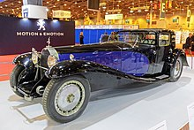
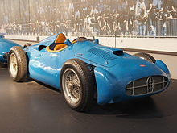

Bugatti

Bugatti Automobiles S.A.S. comúnmente conocido como Bugatti, es un fabricante de automóviles superdeportivos de gran lujo y competencia, fundado en 1909 por Ettore Bugatti (1881-1947) en Molsheim.1 Con el lema de "Nada puede ser demasiado hermoso, nada puede ser demasiado costoso",2 los miembros de la familia Bugatti —Ettore; su hermano Rembrandt Bugatti, que fue el escultor de la célebre mascota del Type 41 Royale, el elefante,3 y su hijo Jean (talentoso diseñador y piloto)4— diseñaron y construyeron durante 30 años una serie de lujosos automóviles que destacaron tanto por su rendimiento como por su diseño. En noviembre de 2021, la compañía fue adquirida por el grupo Bugatti Rimac.
Historia
Ettore Bugatti El fundador Ettore Bugatti nació en Milán, Italia, y la compañía de automóviles que lleva su nombre fue fundada en 1909 en Molsheim, ubicada en la región de Alsacia, que fue parte de Imperio alemán desde 1871 hasta 1919. La compañía era conocida tanto por el nivel de detalle de la ingeniería de sus automóviles, como por la elegante forma en que se ejecutaban los diseños, dada la naturaleza artística de la familia de Ettore (su padre, Carlo Bugatti (1856-1940), fue un importante diseñador de muebles y joyas de estilo modernista).
Competición
Grandes Premios Tanto por su innovación como por sus muchos años de experiencia, Bugatti con su azul tradicional20 fue una marca muy respetada y admirada que rivalizaba con las marcas más emblemáticas de la época en cuanto a estilo y deportividad. Una marca que a pesar de ser francesa, fue fundada en una zona de Alsacia que entonces formaba parte de Prusia, por Ettore Bugatti, de ascendencia italiana. En el año 1921 dos Bugatti T13 participaron en la " I CURSA INTERNACIONAL DE VOITURETTES " Gran Premio de la Penya Rhin. Disputado en el Circuito de Vilafranca del Penedès. Luciendo el color negro, que les había correspondido en el sorteo previo a la carrera. Ambos coches subieron al podio, en primera y segunda posición. El coche ganador fue pilotado por Pierre de Vizcaya y en segunda posición por Pere Monés Maury. El Bugatti Type 32 fue diseñado y fabricado en 1923. Conocido como el "tanque de Tours", el T32 contaba con una carrocería con un primer intento de aerodinámica para reducir la resistencia del aire, idea con la que Bugatti empezó a experimentar a principios de la década de los años 20 con un coche carenado que se aprovecharía de una resistencia del aire reducida y un peso relativamente ligero. Pero esta idea no tuvo éxito alguno en el Type 32, que solo disputó una carrera, el Gran Premio de Francia de 1923, disputado en Tours. Fue una carrera de 35 vueltas a un trazado de casi 23 km para llegar a un total de 800 km de distancia del Gran Premio. Ernest Friderich fue el único piloto en llevar el Type 32 a la línea de meta y lo hizo en tercera posición, lo que puede considerarse como un éxito a medias. El mal rendimiento de aquel T32, que montaba un novedoso sistema hidráulico para los frenos delanteros, hizo que Bugatti desestimara el proyecto y se centrara en sus siguientes máquinas.21 El Bugatti Type 35 fue el coche más exitoso en las carreras para Bugatti e indudablemente uno de los más exitosos de toda la historia del automovilismo, con un total de victorias que excede el millar (en sus mejores tiempos, el T35, que participaba en un sinfín de carreras, conseguía la abrumadora media de 14 victorias por semana). Entre estas, está el éxito en el Campeonato Mundial de Fabricantes de 1926 y las cinco victorias consecutivas en la Targa Florio, de 1925 a 1929.